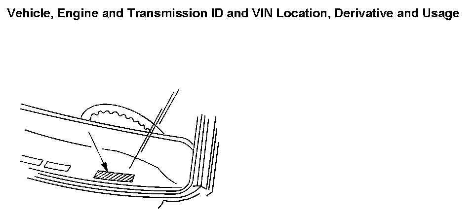

Vehicle, Engine and Transmission ID and VIN Location, Derivative and Usage
VEHICLE, ENGINE AND TRANSMISSION ID AND VIN LOCATION, DERIVATIVE AND USAGE
Vehicle, Engine And Transmission ID And VIN Location, Derivative And Usage:

The vehicle identification number (VIN) plate is the legal identifier of the vehicle. The VIN plate is located on the upper LH corner of the instrument panel (I/P). The VIN number can be seen through the windshield from the outside of the vehicle.
4.8L (LY2), 5.3L (LC9, LYS, LMG), 6.0L (L76, LY6), 6.2L (L92) Engine ID and VIN Derivative Location
Refer to Engine Identification.
4L60-E/4L65-E/4L70-E Transmission ID and VIN Derivative Location
Refer to Transmission Identification Information.
4L80-E/4L85-E Transmission ID and VIN Derivative Location
Refer to Transmission Identification Information.
6L50/6L80/6L90 Transmission ID and VIN Derivative Location
Refer to Transmission Identification Information